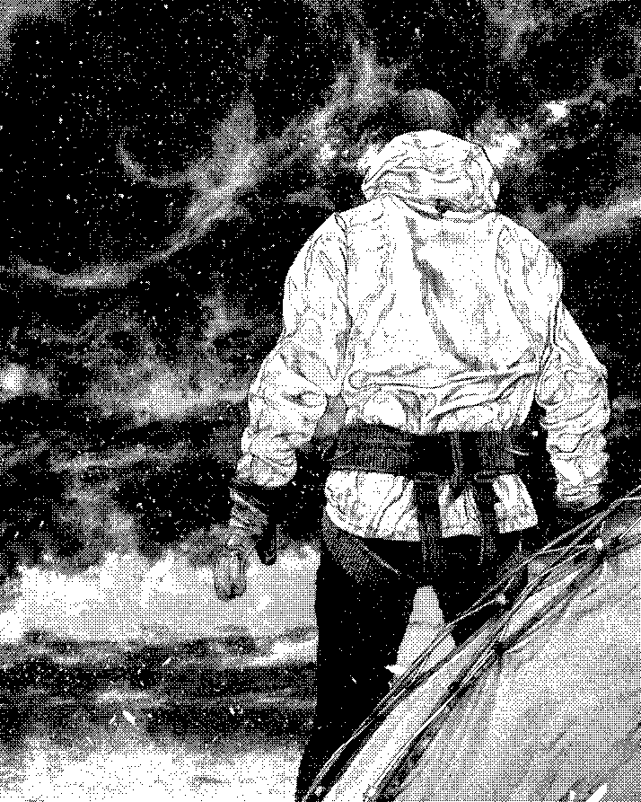

peaks.exe

base camp (someday)
Peaks
Five mountains, lowest to highest.
0
of 5 done. Ticks save in your own browser only.
Mount Washington
1,917 m, New Hampshire. The realistic first one.
Mount Fuji
3,776 m, Japan.
Mount Rainier
4,392 m, Washington. Glaciers, so real training first.
Mount Whitney
4,421 m, California.
Kilimanjaro
5,895 m, Tanzania. The long-term one.